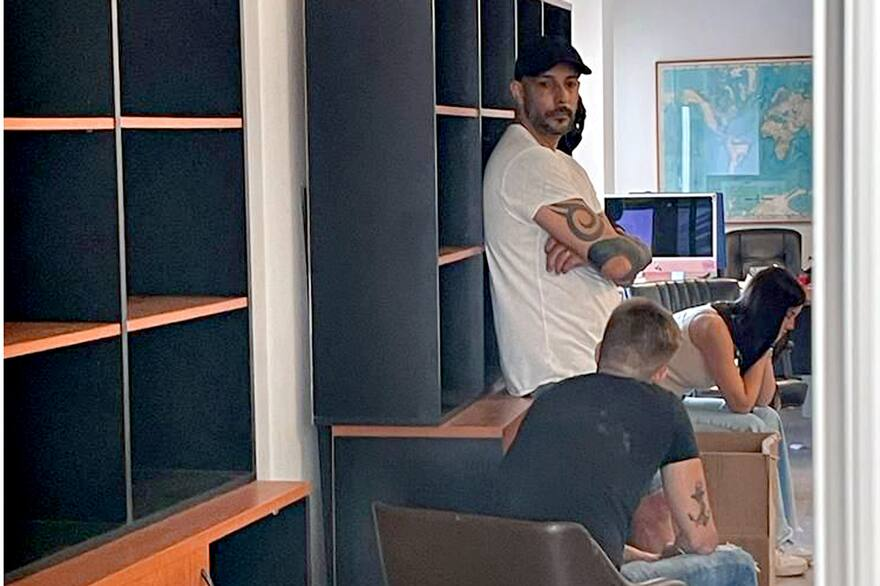
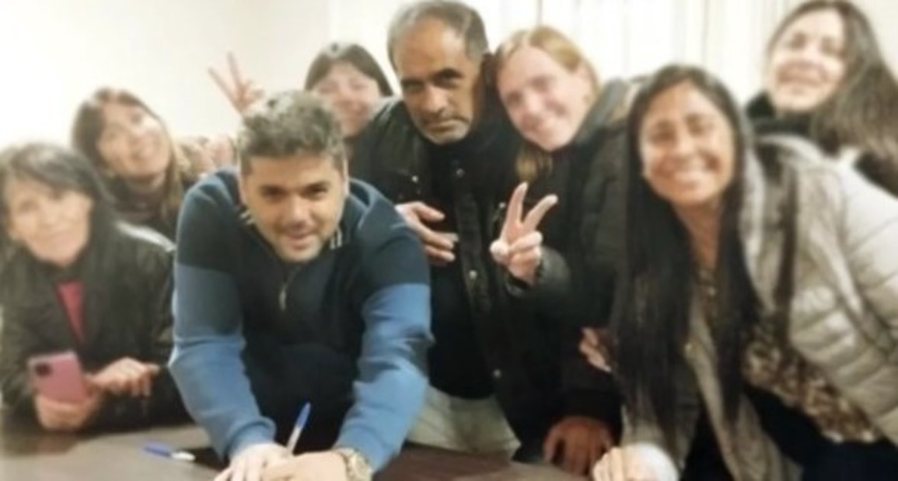
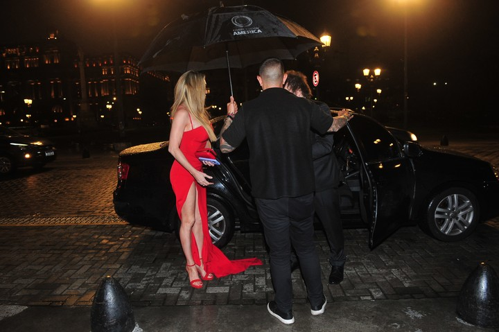

LA NACION
LA NACION es una compañía de medios multiplataforma y soluciones de comunicación con un porfolio diverso de productos de contenidos editoriales.
Las “cuevas” del dólar blue. Detuvieron a Leonardo Fariña tras allanamientos en Belgrano y Las Cañitas y el secuestro de $537 millones
“Busquen en Google” | La campaña digital millonaria para agitar el miedo a Javier Milei
“Te la compran de EE.UU. por 2 pesos”: Gildo Insfrán retó a una wichi porque vende sus artesanías por Internet
CLARIN
Clarín es un periódico argentino con sede en la ciudad de Buenos Aires. Fue fundado el 28 de agosto de 1945, por Roberto Noble.
Las cosas de la política hacen que gente que nunca votaría a Milei, vote a Milei
Tras la preventiva a Chocolate Rigau, la Justicia avanza con la detención del clan Albini y 15 dueños de las tarjetas
Javier Milei fue con Fátima Florez al Teatro Colón y recibió abucheos y aplausos